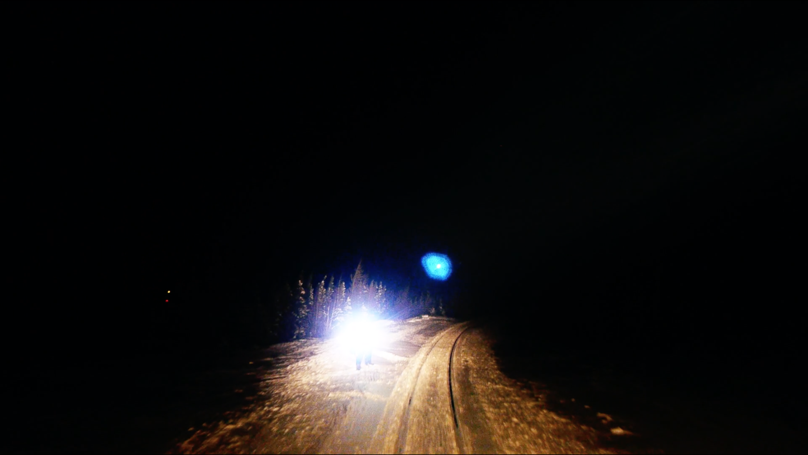
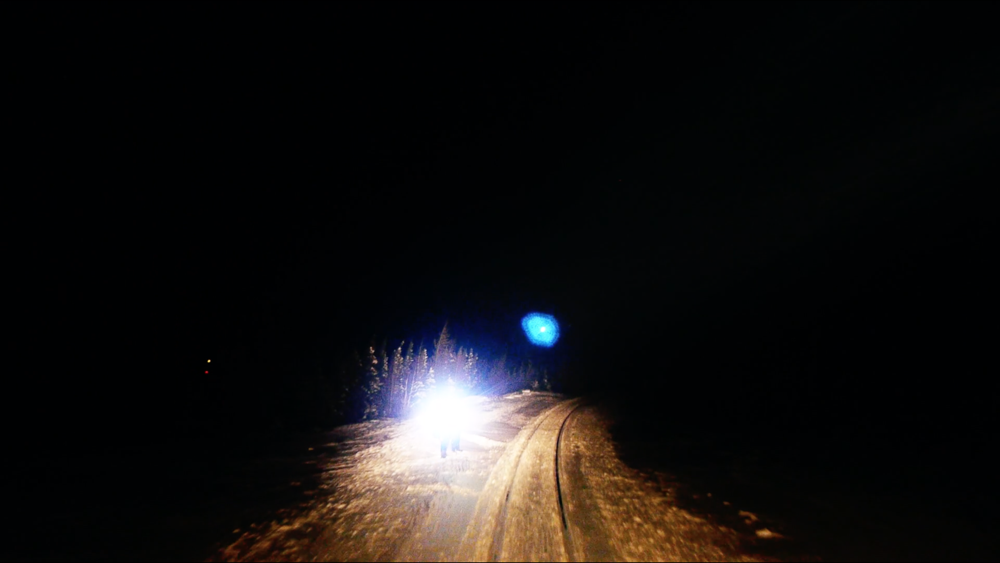

archipels : terres muables, 2020.
 

Un voyage remixé, transfiguré. Un périple hallucinatoire où s’entremêlent des histoires de survie, d’urgence, de fragilité, d’apocalypses, de résistance. archipels : terres muables s'est construit empiriquement au fil des rencontres à partir de fragments vidéo, audio et textuels récoltés sur la route - en Islande, dans le grand-nord québécois, au Labrador, en Tunisie et ailleurs.
Documentaire expérimental présenté au festival Signos da Noite à Lisbonne (2020) et au festival Cinéma on the Bayou à Lafayette (2021).
durée
51 minutes
réalisation, image, son et post-production
Antoine Racine
Myriam Le Ber Assiani
traduction
Evelyne Londei-Shortall
distribution
Vidéographe
voix
Geremiah Lorenzo Lodi
Marie-Hélène Chaussé
François Durette
Sylvie Tourangeau
Yves Demers
Jacob Cadieux
Denis Lebel
Dominic Gagnon
Anne-Marie Tanguay
Jacques Deveault
Francesca Wellington
lieux
Schefferville
Kawawachikamach
Menehek
Mjóifjörður
Baie Johan-Beetz
Hellnar
Natasquan
Tadoussac
Menzel Bouzelfa
Pessamit
Snæfellsjökull
Rivière Rupert
Geysir
Montréal
Sainte-Béatrix
Saint-Médard
Tunis
Korbous
Grandes-Bergeronnes
ZEC de Labrieville
Reykjavik
Eastmain
Jökulsárlón
Landmannalaugar
Monts Uapishka
Krafla
avec la participation du Conseil des Arts et Lettres du Québec